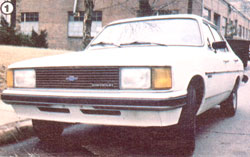
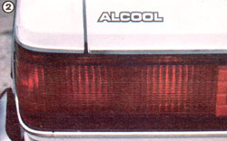

Believe it or not, automobiles that are factory-built to run on renewable fuel are available now:
As regular readers of this magazine know, the subject of alcohol motor fuel has been discussed in these pages for well over two years now. Starting with our Plowboy Interview in issue 55, we've covered just about every phase of ethanol manufacture and use . .. from legal requirements to hardware, and from raw materials to auto conversions. Our editors have been to Brazil to see, firsthand, exactly what the "alcohol-powered" nation is doing to get out from under the thumb of the petrol-producing countries, while our seminar staff has been educating all comers-both on the road and here in North Carolina-in the finer points of ethanol production.
And it looks as if such efforts are helping other folks push for the use of the homegrown fuel. The following is the story of what one small group is doing to help our nation along on the road to energy independence and-at the same time-offer a "second chance" to the thousands of smallscale farmers who desperately need a way out of the multifaceted economic squeeze that's forcing them from their land.
One of the most pointed questions raised by skeptics of the alcohol-for-fuel movement involves not, as one might expect, supply (although that is certainly a consideration), but use. Because the efficiency of any size ethanol manufacturing plant can be improved, to a point, by utilizing the "volume" techniques employed in the large alcohol "factories", even a small (by industry standards) alcohol producer might have a potential production capacity of several hundred gallons per day. But unless the product is anhydrous-an unlikely prospect in the case of most on-farm manufacturers-he or she may well have difficulty finding a profitable market for the ethanol.
This problem exists primarily because most fuel alcohol produced today is used in the blending of gasohol, and thus must be of 200-proof quality ... there simply aren't enough straight-ethanol vehicles around to warrant the establishment of service stations selling 185-proof alcohol. And, even though commercial distilleries will purchase hydrated fuel in order to then drive the water from it themselves, the prices they'll pay to suppliers when doing so often don't allow a comfortable profit margin.
THE SAO PAULO CONNECTION
The solution to our lack of markets for "straight" fuel ethanol seems obvious: Engine manufacturers just have to build or convert their equipment to run on alcohol, then offer it for sale along with their conventionally fueled wares. Unfortunately, most firms are unwilling to invest in what must still be considered an unsure market.
On the other hand, there are already vehicles-in Brazil, where an intense proalcohol program is underway-that are factory-made to burn the clean, renewable fuel . . . and recently a group of Alabama-based businessmen chose to make the ethanol-powered imports available in the United States!
The imaginative entrepreneurs (James Floyd, Michael Pete, and Vic Geisen) have teamed up to form Alcohol Cars for America, Inc., a firm that essentially serves as an agency for the distribution of the Brazilian line. Some months ago, they contacted the General Motors Brazil corporation in Sao Paulo, and negotiated the purchase of 1,000 1981 Chevrolets ... two of which they immediately brought back home. (One has been presented to the governor of Alabama, and the other is being used by the group as a rolling demonstration that alcohol fuel does indeed work.)
At this time, the Environmental Protection Agency and the Department of Transportation see no problem with the introduction of a small number of units. However, the federal officials have indicated that they'll take a closer look if and when more such vehicles are imported.
The ACFA representatives are quick to point out that they don't wish to sell the cars directly to the public themselves . . . as they'd be unable to provide proper service or maintenance. Rather, they hope to interest alcohol fuel producers (or producer-sponsored groups) in the vehicles, so that such organizations can then offer the cars to individuals along with guarantees of fuel supplies and technical expertise. (Since all alcohol-related parts constitute less than 5% of the components in the automobile, most servicing tasks should be no different from those performed by any domestic GM dealer.)
Therefore, the Alcohol Cars for America folks aren't hoping to compete with the "Big Three", but do want to demonstrate to Detroit that an alcohol-fuel market exists. As Jim Floyd puts it, "We'll consider ourselves successful when GM makes these cars here and puts us out of business! Once that day comes, we'll step to the side of the road, applauding." (At present, the ethanol vehicles are price-competitive with other "plush" imports, and their quality appears to be good. The wellequipped mid-sized sedan pictured here cost close to $10,000, though less expensive cars are available, too. Andaccording to the ACFA people-manufacturers warranty costs per unit in Brazil are only oneeighth of those paid out in our own country!)
THEY'RE NOT ALONE . . .
Meanwhile, the Alabama importers have been touring the U.S. in an effort to encourage the production and use of homegrown energy. Trips to the Corn Belt, the western states, and even Washington, D.C. have indicated that interest in the alternative fuel is high. Even better, Jim Floyd has been able to share some of his first-hand experience with those who have yet to set up alcohol plants, since he himself has a 600-gallon-per-day still that uses potato culls, spoiled or contaminated corn, etc. as feedstock ... thus cutting Jim's pergallon costs to a bare-bones minimum.
In short, the ACFA group is one of many organizations interested in doing something about the energy situation in this country ... and, if the firm's efforts can help the smallscale farmer as well, the least we can do is spread the good word.
EDITOR'S NOTE:For further informa tion on the Brazilian imports and the alcohol fuel production program, you can write to Alcohol Cars for America, Inc., Dept. TMEN, Route 1, Box 208, Cullman, Alabama 35055 (or call 205/734-7297).
Alternative vehicle enthusiasts might also be interested in the Future Fuels Challenge Rally (it's a California-to-New York race scheduled to take place September 6 to 12) which is sponsored by Shepard Electronics, Inc., is open to cars powered by nonfossil fuel, and offers a winner-take-all $25,000 prize. All inquiries should be addressed before June 1 to David Carmichael in care of Shepard Elec tronics, Dept. TMEN, 2507 Browncroft Boulevard, Rochester, New York 14625 (or tele phone 716 /586-8451).
|
 |
 |
|